Dùng SubViewport làm texture
Giới thiệu
Bài hướng dẫn này sẽ giới thiệu cách dùng SubViewport làm một texture có thể áp dụng lên các đối tượng 3D. Để làm vậy, bài sẽ hướng dẫn bạn qua quá trình tạo một hành tinh procedural như hình dưới đây:
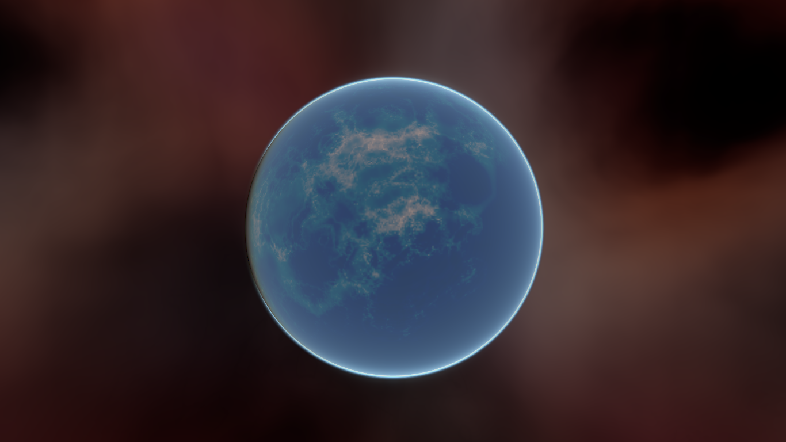
Ghi chú
Bài hướng dẫn này không đề cập đến cách viết code cho một bầu khí quyển động như hành tinh này có.
Bài hướng dẫn này giả định bạn đã quen với cách thiết lập một scene cơ bản gồm: một Camera3D, một nguồn sáng, một MeshInstance3D với một Primitive Mesh, và áp dụng một StandardMaterial3D lên mesh. Trọng tâm sẽ là việc dùng SubViewport để tạo động các texture có thể áp dụng lên mesh.
Trong bài hướng dẫn này, chúng ta sẽ đề cập các chủ đề sau:
Cách dùng SubViewport làm render texture
Ánh xạ texture lên hình cầu bằng phép chiếu equirectangular
Các kỹ thuật fragment shader cho hành tinh procedural
Thiết lập Roughness map từ một Viewport Texture
Thiết lập scene
Tạo một scene mới và thêm các node sau đúng như hình dưới đây.
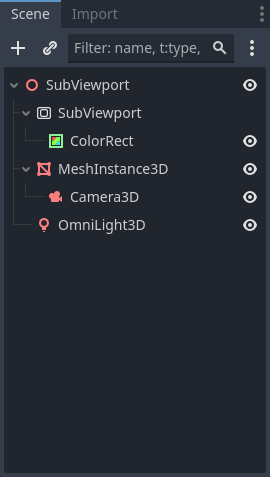
Vào MeshInstance3D và đặt mesh là một SphereMesh
Thiết lập SubViewport
Nhấp vào node SubViewport và đặt kích thước của nó là (1024, 512). Thực ra SubViewport có thể có kích thước bất kỳ miễn là chiều rộng gấp đôi chiều cao. Chiều rộng cần gấp đôi chiều cao để hình ảnh được ánh xạ chính xác lên hình cầu, vì chúng ta sẽ dùng phép chiếu equirectangular, nhưng phần này sẽ nói sau.
Tiếp theo, tắt 3D. Chúng ta sẽ dùng một ColorRect để kết xuất bề mặt, nên cũng không cần đến 3D.
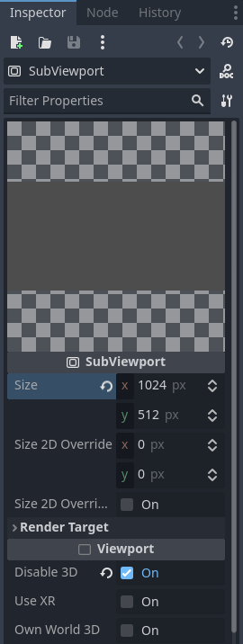
Chọn ColorRect và trong Inspector, đặt anchors preset là Full Rect. Điều này đảm bảo ColorRect chiếm toàn bộ SubViewport.
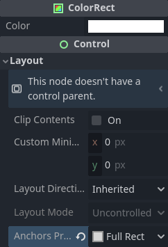
Tiếp theo, chúng ta thêm một Shader Material vào ColorRect (ColorRect > CanvasItem > Material > Material > New ShaderMaterial).
Ghi chú
Bạn nên có hiểu biết cơ bản về shading cho bài hướng dẫn này. Tuy nhiên, ngay cả khi bạn mới làm quen với shader, toàn bộ code đều được cung cấp, nên bạn sẽ không gặp khó khăn khi làm theo.
Nhấp vào nút menu thả xuống của shader material và nhấp / Edit. Từ đây, vào Shader > New Shader. Đặt tên cho nó và nhấp "Create". Nhấp vào shader trong Inspector để mở trình chỉnh sửa shader. Xóa code mặc định và thêm đoạn sau:
shader_type canvas_item;
void fragment() {
COLOR = vec4(UV.x, UV.y, 0.5, 1.0);
}
Lưu code shader, bạn sẽ thấy trong Inspector rằng đoạn code trên kết xuất một dải màu chuyển tiếp như hình dưới đây.
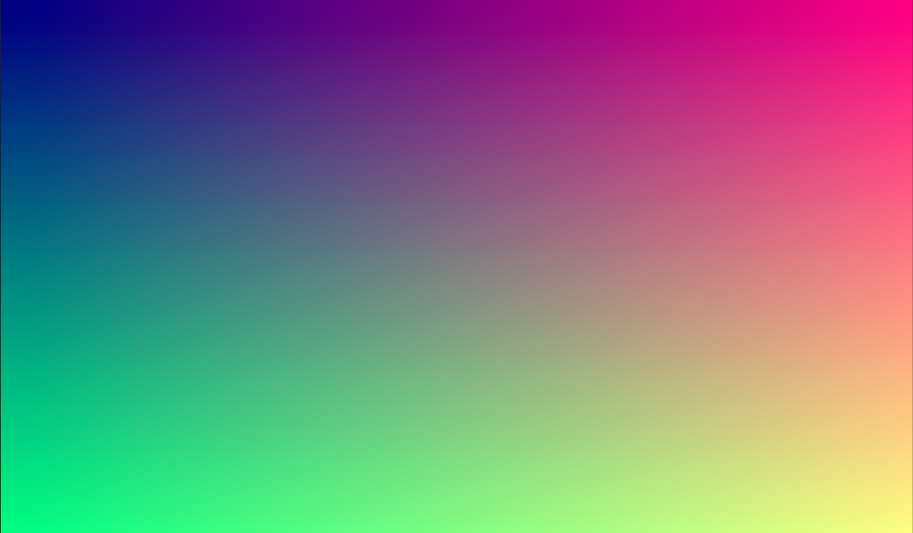
Giờ chúng ta đã có phần cơ bản của một SubViewport để kết xuất vào và có một hình ảnh riêng có thể áp dụng lên hình cầu.
Áp dụng texture
Giờ hãy vào MeshInstance3D và thêm một StandardMaterial3D vào nó. Không cần một Shader Material đặc biệt (dù đó sẽ là ý hay cho các hiệu ứng nâng cao hơn, như bầu khí quyển trong ví dụ ở trên).
MeshInstance3D > GeometryInstance > Geometry > Material Override > New StandardMaterial3D
Sau đó nhấp vào menu thả xuống của StandardMaterial3D và nhấp "Edit"
Vào mục "Resource" và đánh dấu ô Local to scene. Sau đó, vào mục "Albedo" và nhấp bên cạnh thuộc tính "Texture" để thêm một Albedo Texture. Tại đây chúng ta sẽ áp dụng texture đã tạo. Chọn "New ViewportTexture"
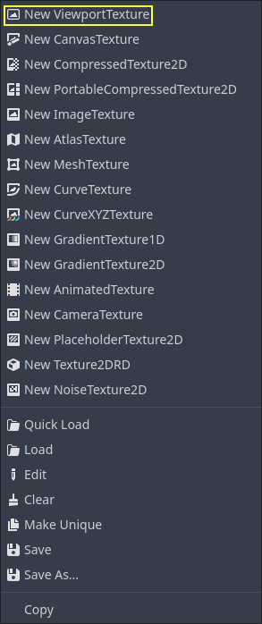
Nhấp vào ViewportTexture bạn vừa tạo trong Inspector, sau đó nhấp "Assign". Tiếp theo, từ menu bật lên, chọn Viewport mà chúng ta đã kết xuất vào trước đó.
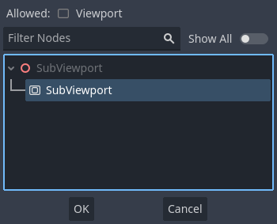
Hình cầu của bạn giờ sẽ được tô bằng các màu mà chúng ta đã kết xuất vào Viewport.

Bạn có để ý đường nối xấu xí xuất hiện ở chỗ texture quấn quanh không? Đó là vì chúng ta chọn màu dựa trên tọa độ UV, mà tọa độ UV không quấn quanh texture. Đây là một vấn đề kinh điển trong phép chiếu bản đồ 2D. Các nhà phát triển game thường có một bản đồ 2 chiều muốn chiếu lên hình cầu, nhưng khi quấn quanh, nó xuất hiện những đường nối lớn. Có một cách giải quyết tinh tế cho vấn đề này mà chúng ta sẽ minh họa ở phần tiếp theo.
Tạo texture hành tinh
Giờ đây, khi chúng ta kết xuất vào SubViewport, nó xuất hiện một cách kỳ diệu trên hình cầu. Nhưng có một đường nối xấu xí do tọa độ texture gây ra. Vậy làm sao để có một dải tọa độ quấn quanh hình cầu một cách đẹp mắt? Một giải pháp là dùng một hàm lặp lại trên miền của texture. sin và cos là hai hàm như vậy. Hãy áp dụng chúng lên texture và xem điều gì xảy ra. Thay đoạn code màu hiện có trong shader bằng đoạn sau:
COLOR.xyz = vec3(sin(UV.x * 3.14159 * 4.0) * cos(UV.y * 3.14159 * 4.0) * 0.5 + 0.5);
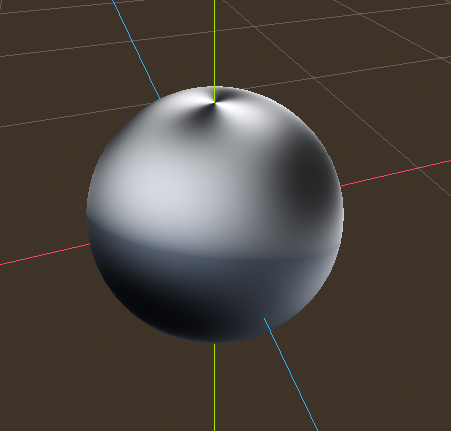
Không tệ lắm. Nếu nhìn quanh, bạn sẽ thấy đường nối đã biến mất, nhưng thay vào đó, chúng ta bị co thắt ở hai cực. Hiện tượng co thắt này là do cách Godot ánh xạ texture lên hình cầu trong StandardMaterial3D. Nó dùng một kỹ thuật chiếu gọi là phép chiếu equirectangular, chuyển một bản đồ hình cầu sang mặt phẳng 2D.
Ghi chú
Nếu bạn muốn biết thêm chút thông tin về kỹ thuật này, chúng ta sẽ chuyển đổi từ tọa độ cầu sang tọa độ Descartes. Tọa độ cầu ánh xạ kinh độ và vĩ độ của hình cầu, còn tọa độ Descartes, về cơ bản, là một vector từ tâm hình cầu đến điểm đó.
Với mỗi pixel, chúng ta sẽ tính vị trí 3D của nó trên hình cầu. Từ đó, chúng ta sẽ dùng noise 3D để xác định giá trị màu. Bằng cách tính noise trong 3D, chúng ta giải quyết được vấn đề co thắt ở hai cực. Để hiểu tại sao, hãy hình dung noise được tính trên bề mặt hình cầu thay vì trên mặt phẳng 2D. Khi tính trên bề mặt hình cầu, bạn không bao giờ chạm tới cạnh, do đó không bao giờ tạo ra đường nối hay điểm co thắt ở cực. Đoạn code sau chuyển UVs sang tọa độ Descartes.
float theta = UV.y * 3.14159;
float phi = UV.x * 3.14159 * 2.0;
vec3 unit = vec3(0.0, 0.0, 0.0);
unit.x = sin(phi) * sin(theta);
unit.y = cos(theta) * -1.0;
unit.z = cos(phi) * sin(theta);
unit = normalize(unit);
Và nếu dùng unit làm giá trị COLOR đầu ra, chúng ta được:
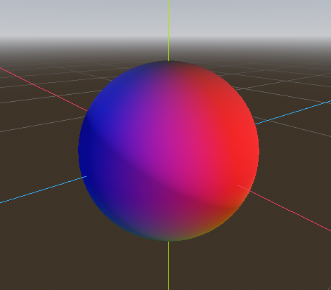
Giờ chúng ta đã tính được vị trí 3D của bề mặt hình cầu, chúng ta có thể dùng noise 3D để tạo hành tinh. Chúng ta sẽ dùng trực tiếp hàm noise này từ một Shadertoy:
vec3 hash(vec3 p) {
p = vec3(dot(p, vec3(127.1, 311.7, 74.7)),
dot(p, vec3(269.5, 183.3, 246.1)),
dot(p, vec3(113.5, 271.9, 124.6)));
return -1.0 + 2.0 * fract(sin(p) * 43758.5453123);
}
float noise(vec3 p) {
vec3 i = floor(p);
vec3 f = fract(p);
vec3 u = f * f * (3.0 - 2.0 * f);
return mix(mix(mix(dot(hash(i + vec3(0.0, 0.0, 0.0)), f - vec3(0.0, 0.0, 0.0)),
dot(hash(i + vec3(1.0, 0.0, 0.0)), f - vec3(1.0, 0.0, 0.0)), u.x),
mix(dot(hash(i + vec3(0.0, 1.0, 0.0)), f - vec3(0.0, 1.0, 0.0)),
dot(hash(i + vec3(1.0, 1.0, 0.0)), f - vec3(1.0, 1.0, 0.0)), u.x), u.y),
mix(mix(dot(hash(i + vec3(0.0, 0.0, 1.0)), f - vec3(0.0, 0.0, 1.0)),
dot(hash(i + vec3(1.0, 0.0, 1.0)), f - vec3(1.0, 0.0, 1.0)), u.x),
mix(dot(hash(i + vec3(0.0, 1.0, 1.0)), f - vec3(0.0, 1.0, 1.0)),
dot(hash(i + vec3(1.0, 1.0, 1.0)), f - vec3(1.0, 1.0, 1.0)), u.x), u.y), u.z );
}
Ghi chú
Toàn bộ công lao thuộc về tác giả, Inigo Quilez. Nó được phát hành theo giấy phép MIT.
Giờ để dùng noise, hãy thêm đoạn sau vào hàm fragment:
float n = noise(unit * 5.0);
COLOR.xyz = vec3(n * 0.5 + 0.5);
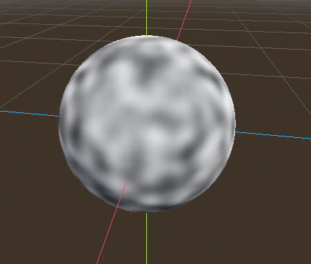
Ghi chú
Để làm nổi bật texture, chúng ta đặt material thành unshaded.
Giờ bạn có thể thấy noise thực sự quấn liền mạch quanh hình cầu. Dù vậy, trông nó chẳng giống chút nào với hành tinh bạn được hứa hẹn. Vậy hãy chuyển sang thứ gì đó nhiều màu sắc hơn.
Tô màu hành tinh
Giờ hãy tạo màu cho hành tinh. Dù có nhiều cách để làm điều này, hiện tại chúng ta sẽ dùng một dải màu chuyển tiếp giữa nước và đất liền.
Để tạo dải màu chuyển tiếp trong GLSL, chúng ta dùng hàm mix. mix nhận hai giá trị để nội suy giữa chúng và một tham số thứ ba để chọn mức nội suy giữa hai giá trị; về bản chất, nó trộn hai giá trị với nhau. Trong các API khác, hàm này thường được gọi là lerp. Tuy nhiên, lerp thường chỉ dùng để trộn hai số float; mix có thể nhận bất kỳ giá trị nào, dù là float hay kiểu vector.
COLOR.xyz = mix(vec3(0.05, 0.3, 0.5), vec3(0.9, 0.4, 0.1), n * 0.5 + 0.5);
Màu thứ nhất là màu xanh dương cho đại dương. Màu thứ hai là một kiểu màu đỏ nhạt (vì hành tinh ngoài hành tinh nào cũng cần địa hình màu đỏ). Cuối cùng, chúng được trộn với nhau bằng n * 0.5 + 0.5. n biến thiên mượt mà giữa -1 và 1. Vì vậy chúng ta ánh xạ nó vào khoảng 0-1 mà mix cần. Giờ bạn có thể thấy màu thay đổi giữa xanh dương và đỏ.
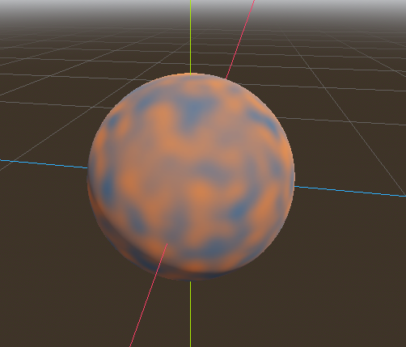
Kết quả hơi mờ hơn mong muốn. Các hành tinh thường có ranh giới khá rõ giữa đất liền và biển. Để làm vậy, chúng ta sẽ đổi số hạng cuối thành smoothstep(-0.1, 0.0, n). Và như vậy cả dòng trở thành:
COLOR.xyz = mix(vec3(0.05, 0.3, 0.5), vec3(0.9, 0.4, 0.1), smoothstep(-0.1, 0.0, n));
smoothstep trả về 0 nếu tham số thứ ba nhỏ hơn tham số thứ nhất, trả về 1 nếu tham số thứ ba lớn hơn tham số thứ hai, và chuyển tiếp mượt mà giữa 0 và 1 nếu số thứ ba nằm giữa số thứ nhất và số thứ hai. Vì vậy trong dòng này, smoothstep trả về 0 bất cứ khi nào n nhỏ hơn -0.1 và trả về 1 bất cứ khi nào n lớn hơn 0.
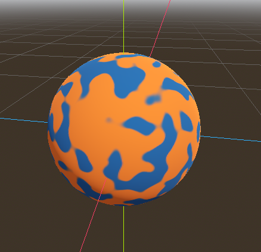
Còn một việc nữa để nó trông giống hành tinh hơn. Đất liền không nên trông như những đốm tròn; hãy làm cho các cạnh gồ ghề hơn một chút. Một mẹo thường dùng trong shader để tạo địa hình trông gồ ghề bằng noise là xếp chồng các lớp noise lên nhau ở các tần số khác nhau. Chúng ta dùng một lớp để tạo cấu trúc tổng thể dạng đốm của các lục địa. Sau đó một lớp khác phá vỡ các cạnh một chút, rồi một lớp nữa, và cứ thế. Việc chúng ta sẽ làm là tính n bằng bốn dòng code shader thay vì chỉ một. n trở thành:
float n = noise(unit * 5.0) * 0.5;
n += noise(unit * 10.0) * 0.25;
n += noise(unit * 20.0) * 0.125;
n += noise(unit * 40.0) * 0.0625;
Và giờ hành tinh trông như thế này:
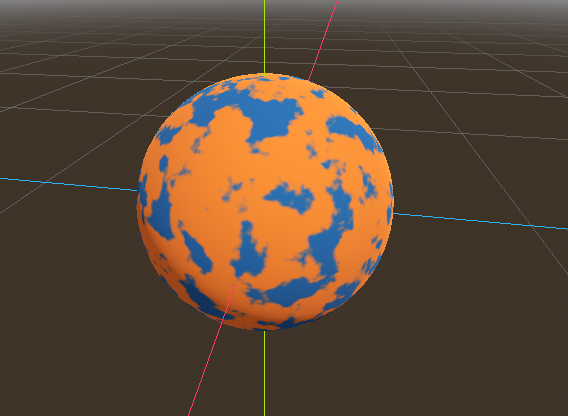
Tạo đại dương
Một việc cuối cùng để nó trông giống hành tinh hơn. Đại dương và đất liền phản xạ ánh sáng khác nhau. Vì vậy chúng ta muốn đại dương bóng hơn đất liền một chút. Chúng ta có thể làm điều này bằng cách truyền một giá trị thứ tư vào kênh alpha của COLOR đầu ra và dùng nó làm Roughness map.
COLOR.a = 0.3 + 0.7 * smoothstep(-0.1, 0.0, n);
Dòng này trả về 0.3 cho nước và 1.0 cho đất liền. Điều này có nghĩa là đất liền sẽ khá nhám, còn nước sẽ khá nhẵn.
Sau đó, trong material, ở mục "Metallic", đảm bảo Metallic được đặt là 0 và Specular được đặt là 1. Lý do là nước phản xạ ánh sáng rất tốt, nhưng không phải kim loại. Các giá trị này không chính xác về mặt vật lý, nhưng đủ tốt cho bản demo này.
Tiếp theo, ở mục "Roughness", đặt roughness texture là một Viewport Texture trỏ tới SubViewport chứa texture hành tinh. Cuối cùng, đặt Texture Channel là Alpha. Điều này chỉ thị cho renderer dùng kênh alpha của COLOR đầu ra làm giá trị Roughness.

Bạn sẽ thấy rất ít thay đổi, ngoại trừ việc hành tinh không còn phản chiếu bầu trời. Điều này xảy ra vì, theo mặc định, khi thứ gì đó được kết xuất với giá trị alpha, nó được vẽ như một đối tượng trong suốt phía trên nền. Và vì nền mặc định của SubViewport là đục, kênh alpha của Viewport Texture là 1, dẫn đến texture hành tinh được vẽ với màu hơi nhạt hơn và giá trị Roughness là 1 ở mọi nơi. Để khắc phục, chúng ta vào SubViewport và bật thuộc tính "Transparent Bg". Vì giờ chúng ta đang kết xuất một đối tượng trong suốt chồng lên một đối tượng khác, chúng ta muốn bật blend_premul_alpha:
render_mode blend_premul_alpha;
Thao tác này nhân trước các màu với giá trị alpha rồi hòa trộn chúng với nhau một cách chính xác. Thông thường, khi hòa trộn một màu trong suốt chồng lên một màu khác, ngay cả khi nền có alpha bằng 0 (như trong trường hợp này), bạn sẽ gặp vấn đề loang màu kỳ lạ. Thiết lập blend_premul_alpha sẽ khắc phục điều đó.
Giờ hành tinh sẽ trông như đang phản xạ ánh sáng trên đại dương nhưng không phản xạ trên đất liền. Di chuyển OmniLight3D trong scene để bạn thấy hiệu ứng phản xạ trên đại dương.

Vậy là xong. Một hành tinh procedural được tạo bằng SubViewport.